No space to play
Children turn a cemetery into their playground, in severely overcrowded Beddawi Refugee Camp.
LIFE WITHIN A REFUGEE CAMP
In Lebanon, the Palestinian refugee camps from 1952 still exist today, with generations of refugee families, numbering more than one million people, unable to return home. They live in overcrowded and impoverished conditions, face pressures from extremist groups, and their right to work is restricted.
The conflict in Syria added to the camps’ numbers and collective trauma, as Palestinian refugees once based in Syria now seek refuge in Lebanon, amongst fellow Palestinians. Multiple families living in one house, the heavily militarized environment, and the trauma of living through war contributes to a disabling environment that can exacerbate, or even cause, mental health problems, especially amongst children.
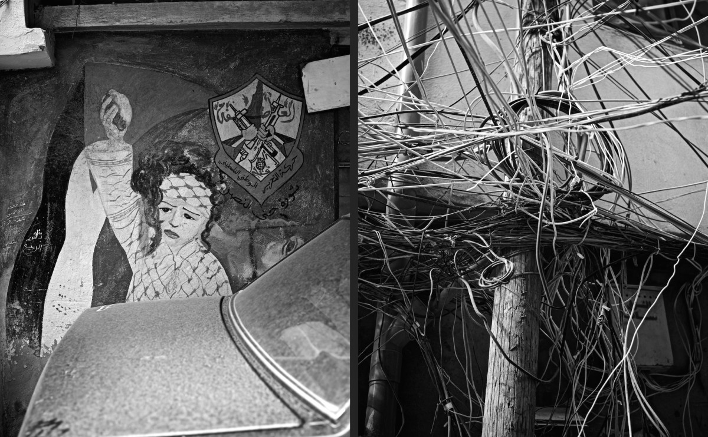
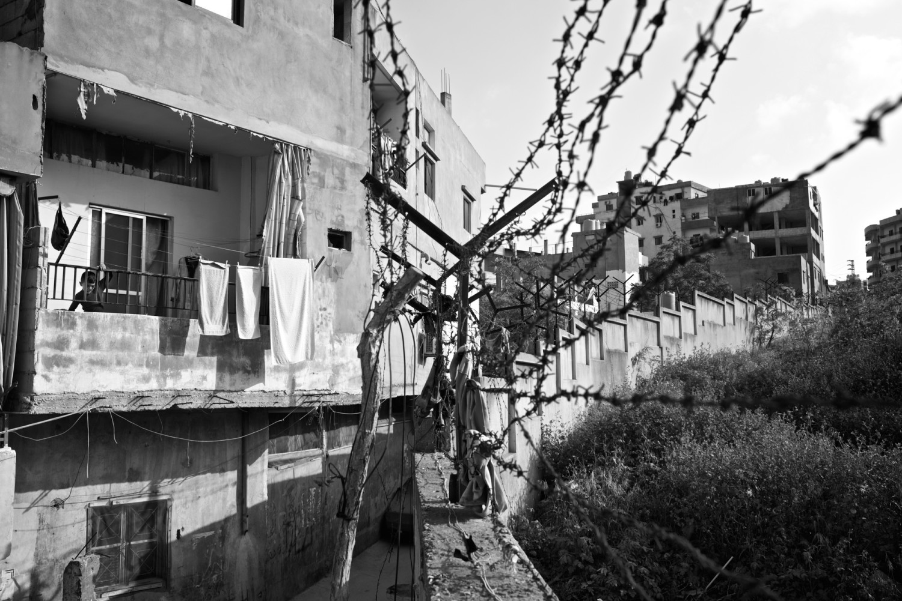
Fenced In
Beddawi Refugee Camp is located approximately 5 km north of the Lebanese city of Tripoli.
It was established in 1952, after Palestinians were displaced from their homeland in 1948. Beddawi grew into a camp of approximately 16,000 people.
In 2007, an Islamic extremist group from inside the nearby Palestinian camp of Nahr-el Barad attacked the Lebanese army. In retaliation, the Lebanese army attacked Nahr-el Barad, destroying much of the camp and displacing the entire population of 40,000. Many of these people moved to Beddawi Refugee Camp, creating severe overcrowding. A large number of those displaced were hosted by families already living at Beddawi Refugee Camp.
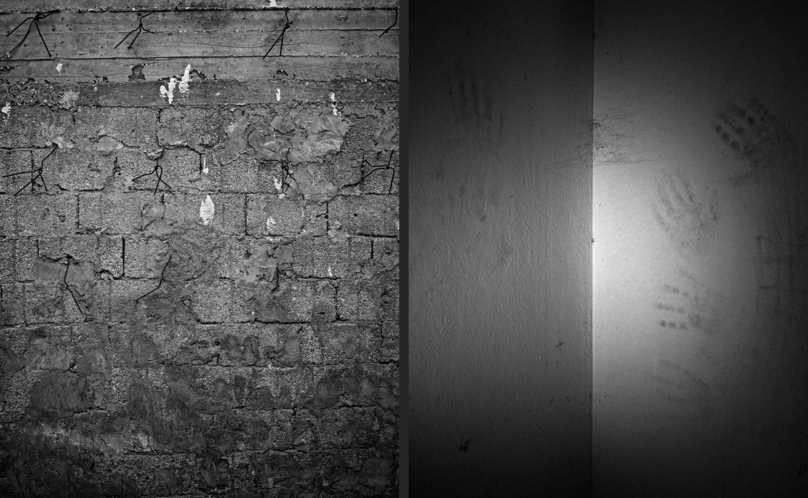
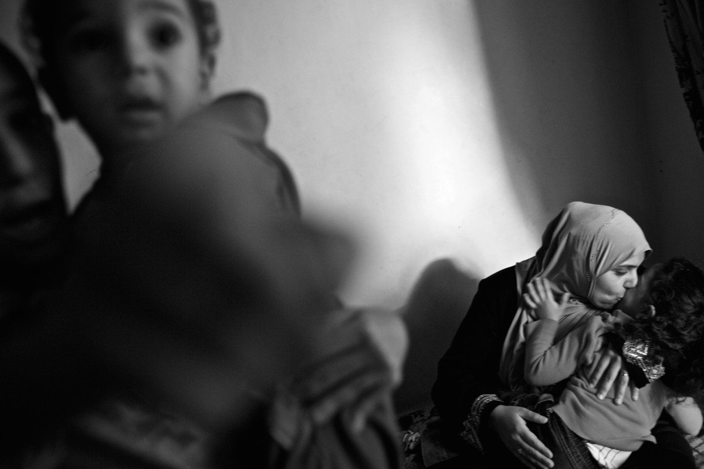
The Ramadan family, from Homs, Syria, came to Lebanon in 2013. They live in a house with 17 people, including 12 children from four families. Their house in Homs lay between frontlines; on one side the Syrian regime, on the other, the Free Syrian Army.
“There was shelling around the clock, everyday, by air, by tanks, troops. Our house got hit but no one was in the room and no one got hurt.” Fatima Ramadan.
“We got used to going to sleep to the sound of the bombing.” Mustafa Ramadan, 13.
“I saw a lot of dead bodies. I saw a lady and a little girl with her daughter on their way to fill water. They were both shot in the back. I saw it with my own eyes…How can we forget what happened to us. It is always on own mind.” Mustafa Ramadan, 13.
“We still have a problem of nightmares, kids peeing their pants, memories of the war.” Raghada El Masri, who shares a home with the Ramadan family.
“I hear some the children talking to themselves in their sleep about the war, and they wake up crying…Life was so hard over there. We came to Lebanon to escape the misery, but we find we are suffering here.” Raghada El Masri.
Men pose with weapons, after a parade in Beddawi Refugee Camp. The parade celebrated the 50th anniversary since the start of General Command: a Palestinian resistance organization; aligned to Hezbollah (a militant organisation and political party based in Lebanon); and supported by the Syrian Regime and Iran. Many Palestinian refugee camps in Lebanon are highly militarised.
“Children living in camps…they have no place to play and breathe. ”
Streets and sections of camps can be divided into groups supporting opposing sides. One street may have posters and flags supporting the Syrian regime, while another might display those showing support for the Islamic State Group, or the Free Syrian Army.
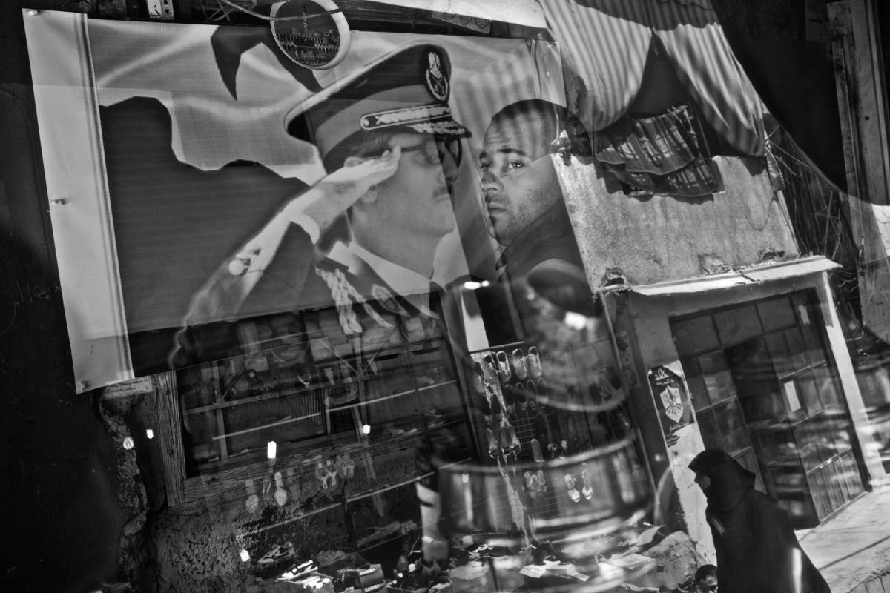
A Palestinian refugee in his shop preparing to open for the day. His shop is adorned with portraits of Syrian President Bashar al-Assad.
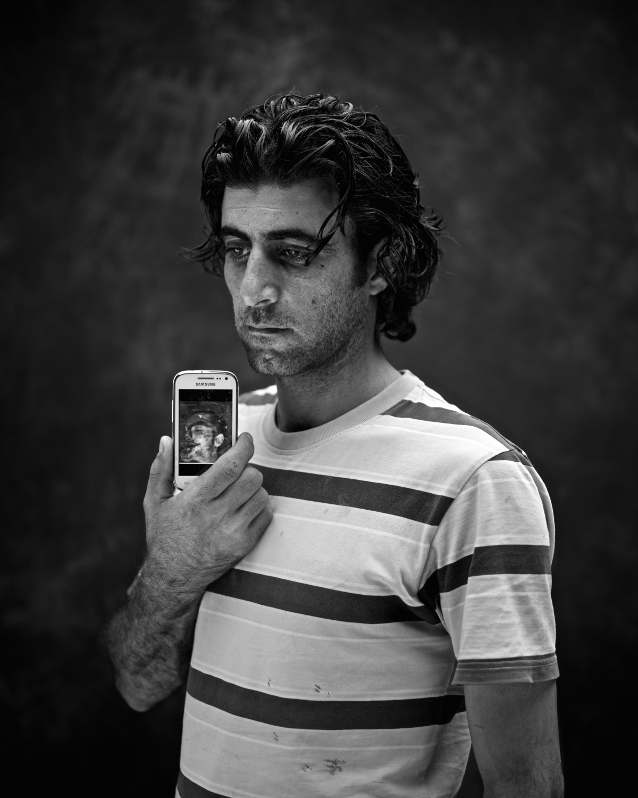
Hekmat Abo Shakra is Palestinian Syrian who fled the war in Syria. Two of his brothers were killed. He is holding a picture of one of his dead brothers. He was an electrician but now, as a refugee, he is not allowed to work. He suffers from severe stress.
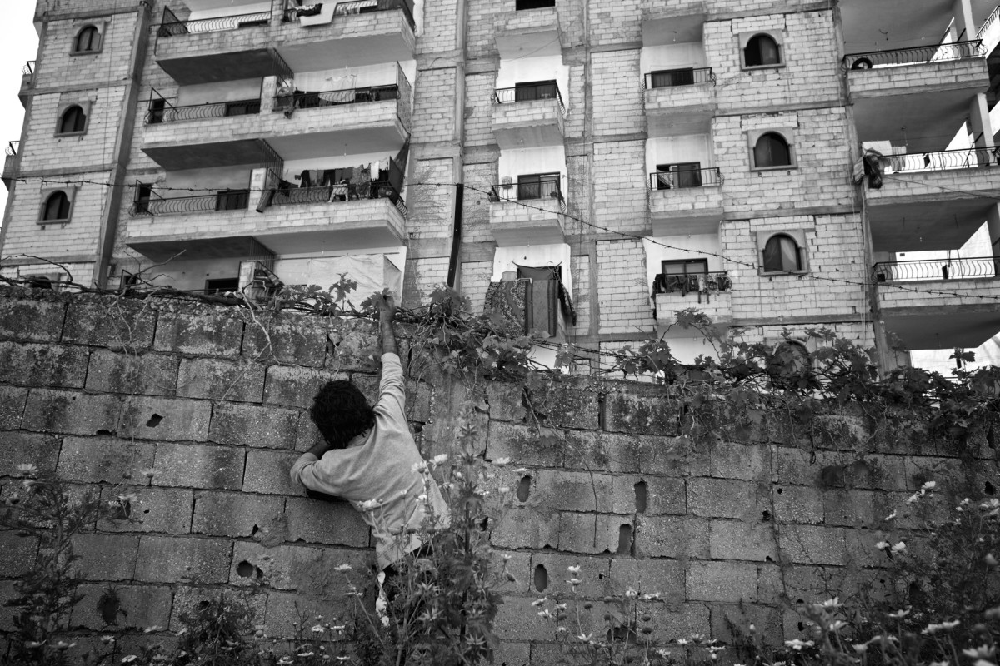
Hekmat Abo Shakra collects vine leaves for cooking from a wall that surrounds a building in Beddawi Refugee Camp.
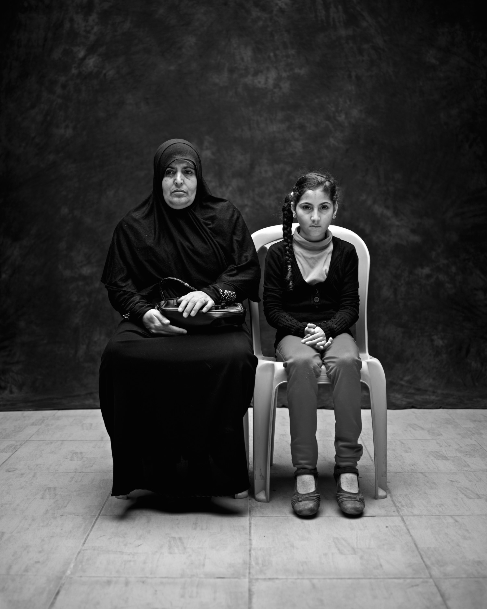
Ten year old Ayat Ramadan with her mother Jamalat, from Homs, Syria.
“I dream of Syria, of the bombings, the missiles. The regime arrested my father at the checkpoint when we were on our way to Lebanon. I think about him and I love him a lot.” Ayat Ramadan, ten years old.
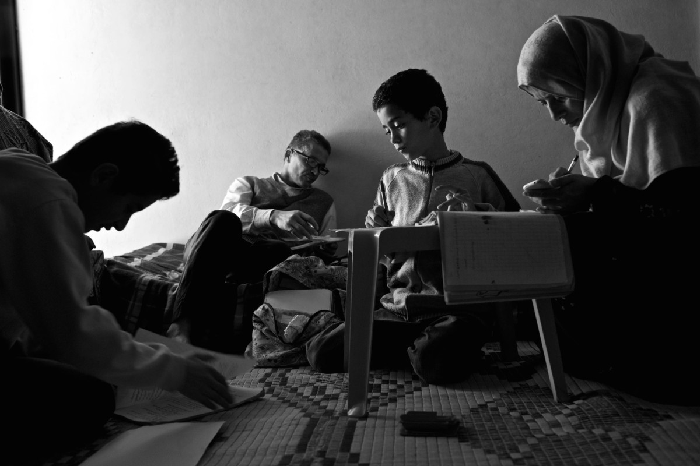
Ten year old Mohammad Aldalou and his family.
Ten year old Mohammad Aldalou lived with his parents and brother in the Palestinian refugee camp of Yamook in Syria, until they were forced to leave due to the fighting. Opposing forces agreed a 48 hour ceasefire to allow them to leave. With only what they could carry themselves, they came to Beddawi Camp, arriving in August 2013.
“They don’t have their own space, toys, and no stability. We have lost hope for the future and don’t know how to adapt to the present.” Noor Aldalou.
“We’re living in a miserable condition…we are way way way below the poverty line” says Noor, Mohammad’s father. Noor also lives with his sister and her children; and his elderly, paralysed mother. They receive $125 each month, from the United Nations Relief and Works Agency. “We have $60 left to spend on food for the whole month and there are four people in this house”.
Both ten year old Mohammad and his brother, 15 year old Omar, display symptoms of post traumatic stress disorder. The children lived with constant bombardment for a year in Syria, witnessing death and mass destruction. Omar won’t go to the toilet unless he knows his mother is close by, guarding the door. His mother says he’s “over-attached” to her, and has nightmares all the time. “The fear is always there” says Noor. Their poor living conditions compound the trauma.
Mehsen Mohammad Abdel Rahman, with his wife Lina Baddawi, and their children: eight year old Mona (who is blind and has a bone disorder), seven year old Firas, and two year old Zakaria (who was born with a hole in his heart). They are from Azaz, Aleppo, Syria.
“I care for my own kids, they get scared from the fireworks’ sounds here.”
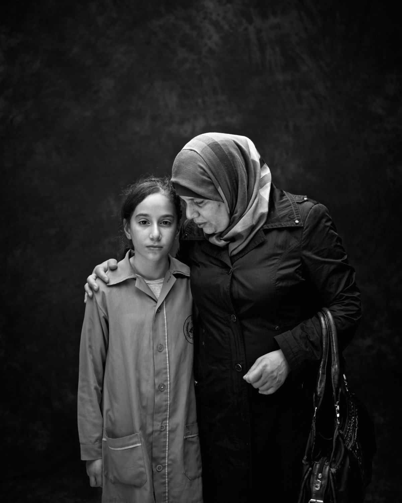
Ten year old Luna Ahmad Saud Aldine and her mother, Samar Harbaje, are from Yarmook Palestinian Camp in Syria, and now live in the Beddawi Refugee camp in Lebanon. Luna displays signs of post traumatic stress disorder.
I’m always afraid Ten year old Luna Ahmad Saud Aldine
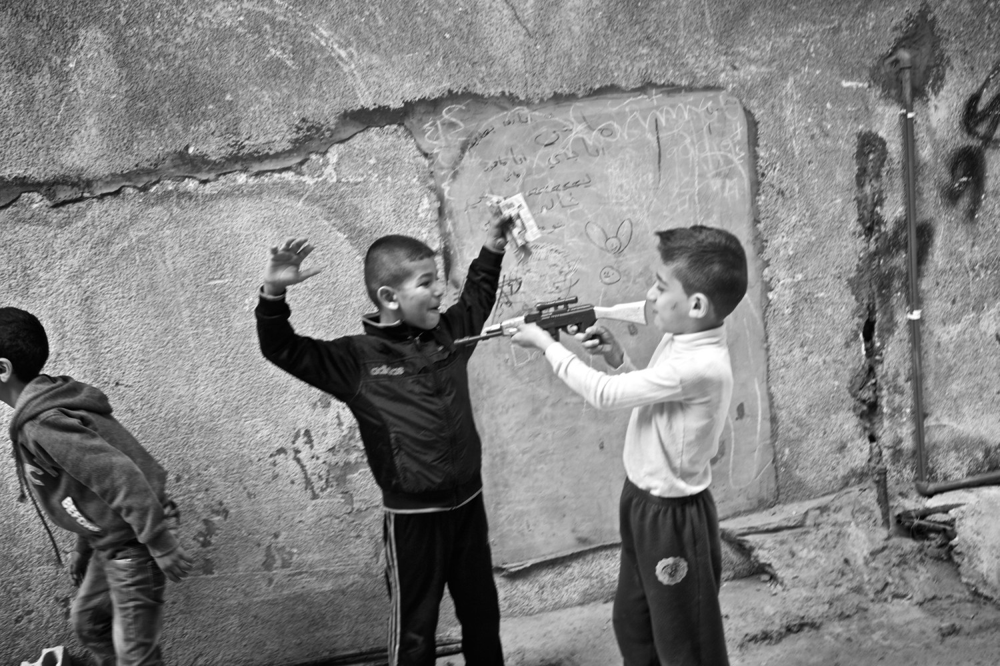
“I can see the war very negatively affected the kids, they used to have more fun. Those days are over.”
RAGHADA EL MASRI
Living in militarised environments compounds trauma for those who have lived through war.
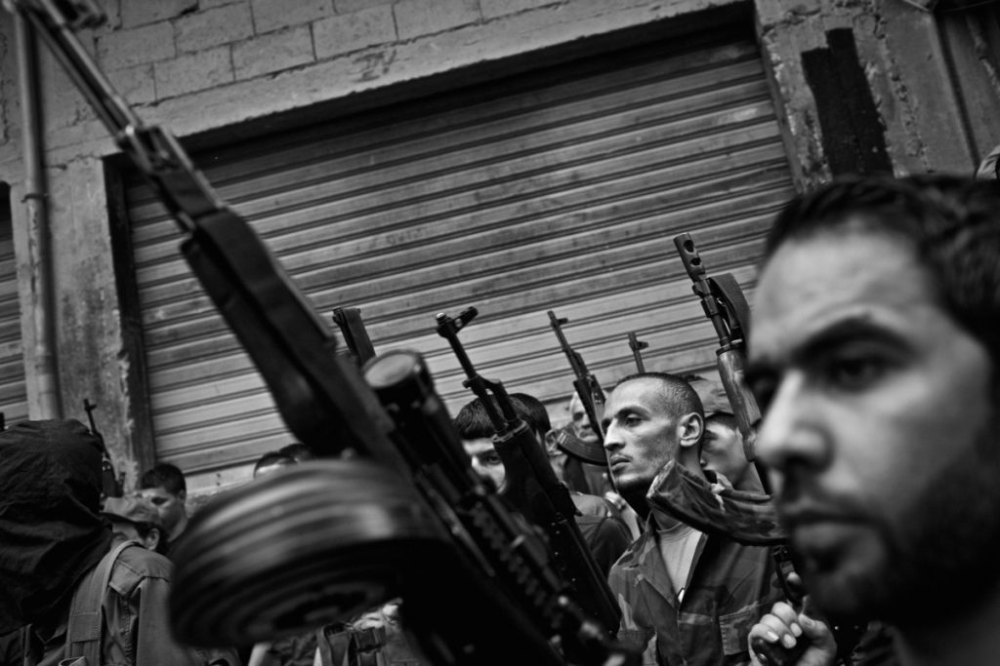
A parade in Beddawi Refugee Camp, celebrating the 50th anniversary since the start of General Command, a Palestinian resistance organization aligned to Hezbollah, the Syrian Regime, and Iran.
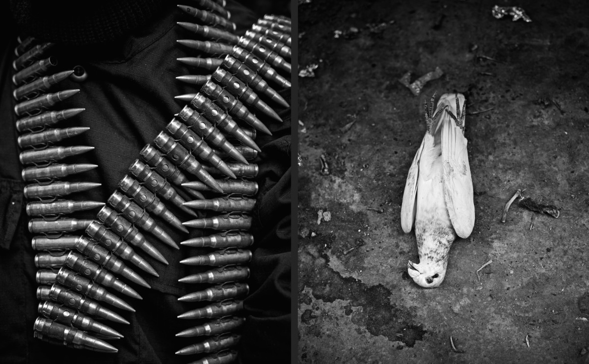
“I have a big hope that this very basic service could be available to support them to continue their lives.”
MAHA HODROJ
The Family Guidance Center is a multidisciplinary mental health facility, specializing in the prevention and treatment of developmental, psychological, and psychiatric disorders. This facility serves children and adolescents, primarily from the Palestinian populations of Lebanon, and Syrians who have come to Lebanon following the conflict there.
Maha Hodroj works in the mental health department of the Center in the Al Bus camp, and strives to address the many factors that affect the mental health of the refugees, and to assist refugees with learning disabilities.
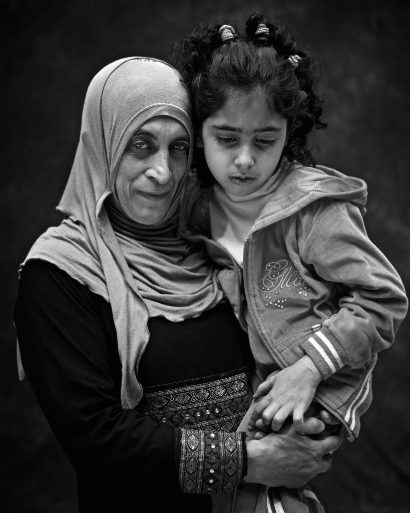
Siham Ahamad Karim with Tala, her seven year old daughter, who has cerebral palsy. They are supported by the Family Guidance Center.
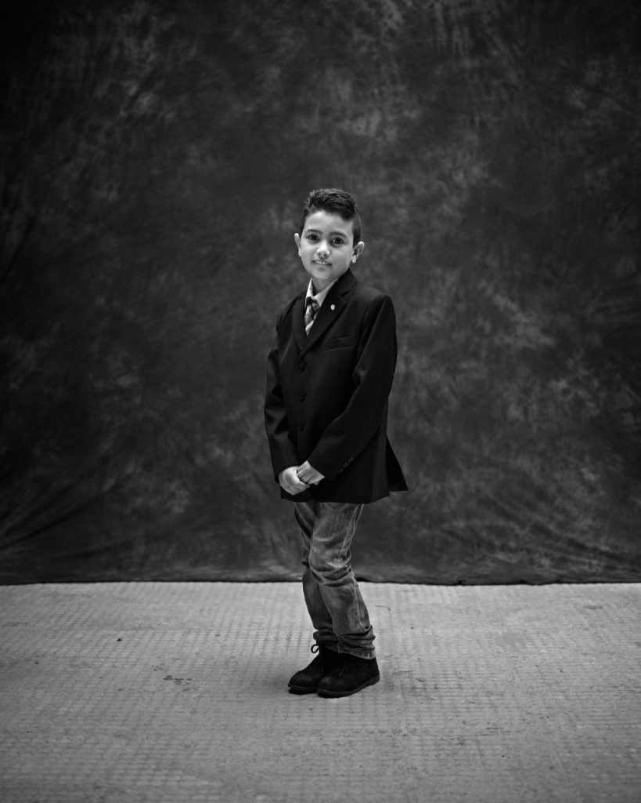
Eight year old Palestinian, Ahamad Adel Mohammad, has dysphasia, a language disorder marked by deficiency in speech, and sometimes also comprehension. He and his family are supported by the Family Guidance Center.
Adham Khdeir and his eight year old daughter Baraa live in Burj el-Shemali camp for Palestinians in Lebanon.
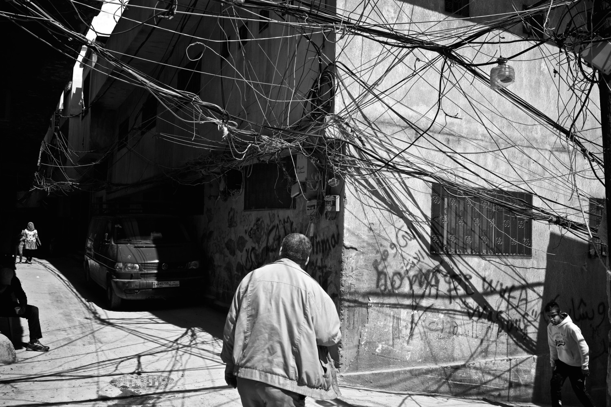
“How can we forget what happened to us?”
MUSTAFA RAMADAN
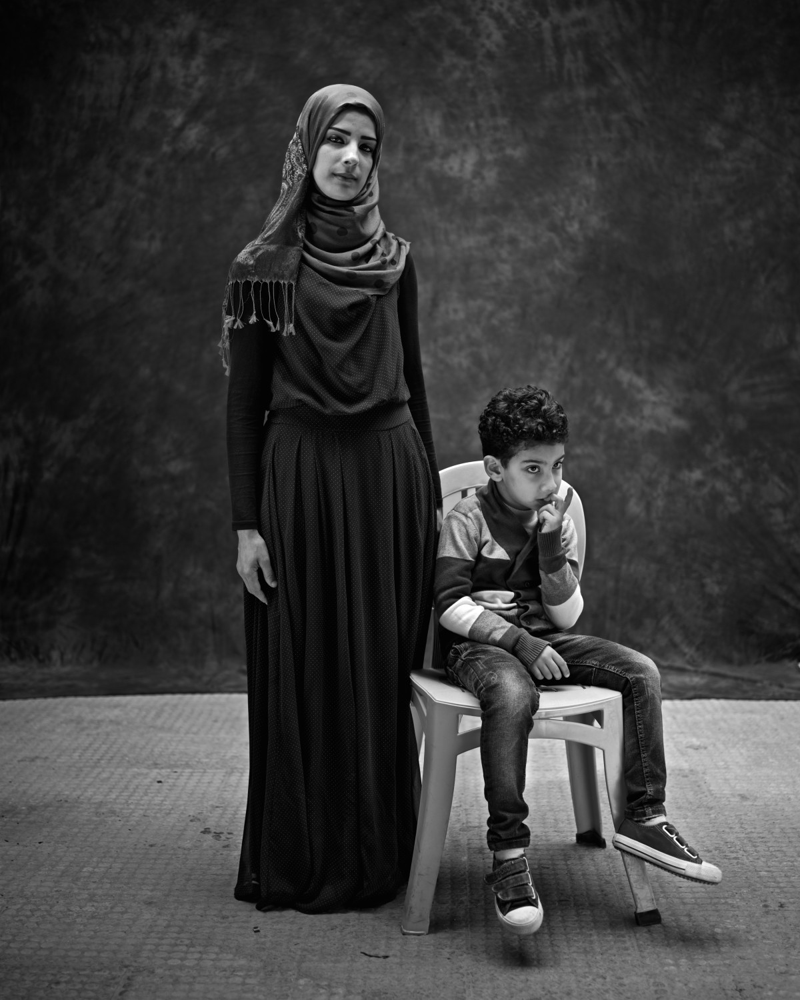
Diala Ali Diab with her six year old son, Ismail Atwy Saltani. They attend the Family Guidance Center at Al Bus refugee camp, in Tyre, Lebanon.
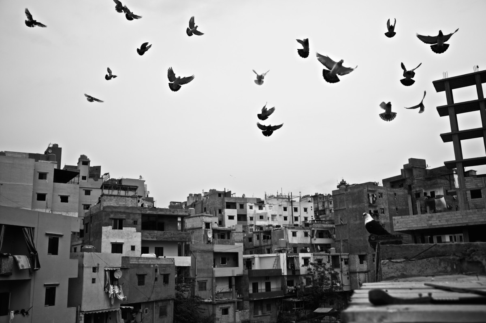
“I saw massacres. My cousin was among them. The worst kinds of killing. I feel like any other man, what could be your feeling?” Issa, Beddawi Refugee Camp.